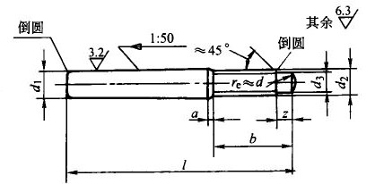

d1(公称)h10 |
a max |
b max |
d2 |
d3 max |
z max |
l(商品规格范围) |
l系列(公称尺寸) |
5 |
2.4 |
15.6 |
M5 |
3.5 |
1.5 |
40～50 |
40,45,50,55,60,65,75,85,100,120,140,160,190,220,250,280,320,360,400 |
6 |
3 |
20 |
M6 |
4 |
1.75 |
45～60 |
|
8 |
4 |
24.5 |
M8 |
5.5 |
2.25 |
55～75 |
|
10 |
4.5 |
27 |
M10 |
7 |
2.75 |
65～100 |
|
12 |
5.3 |
30.5 |
M12 |
8.5 |
3.25 |
85～120 |
|
16 |
6 |
39 |
M16 |
12 |
4.3 |
100～160 |
|
20 |
6 |
39 |
M16 |
12 |
4.3 |
120～190 |
|
25 |
7.5 |
45 |
M20 |
15 |
5.3 |
140～250 |
|
30 |
9 |
52 |
M24 |
18 |
6.3 |
160～280 |
|
40 |
10.5 |
65 |
M30 |
23 |
7.5 |
190～320 |
|
50 |
12 |
78 |
M36 |
28 |
9.4 |
220～400 |
注：
1．标记示例：
公称直径d1=8mm、公称长度l=60mm、材料为Y12或Y15不经热处理、不经表面氧化处理的螺尾锥销：
销GB/T881 8×60
2．本表的单位是mm。